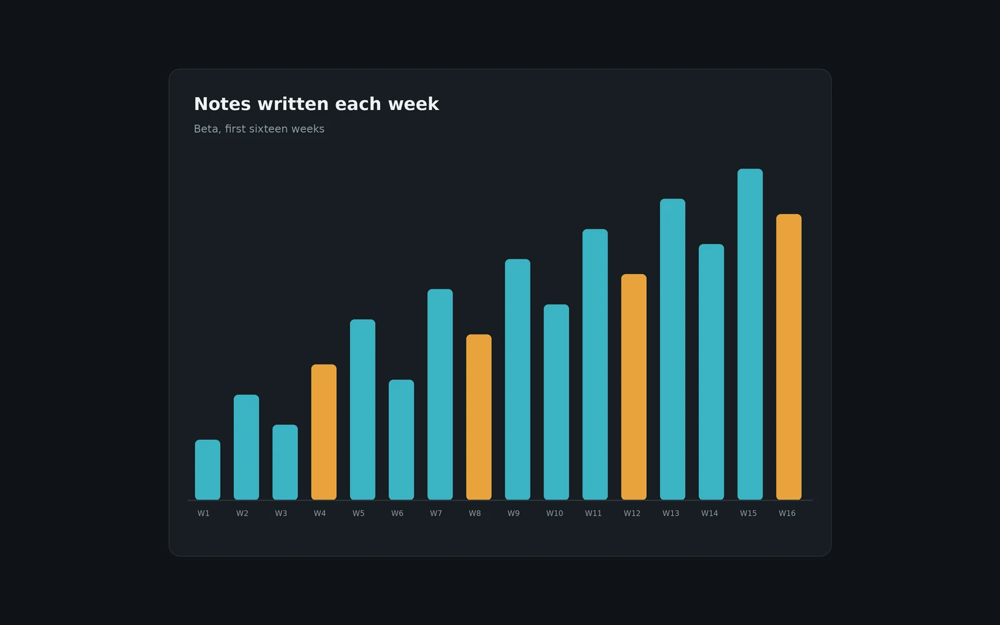
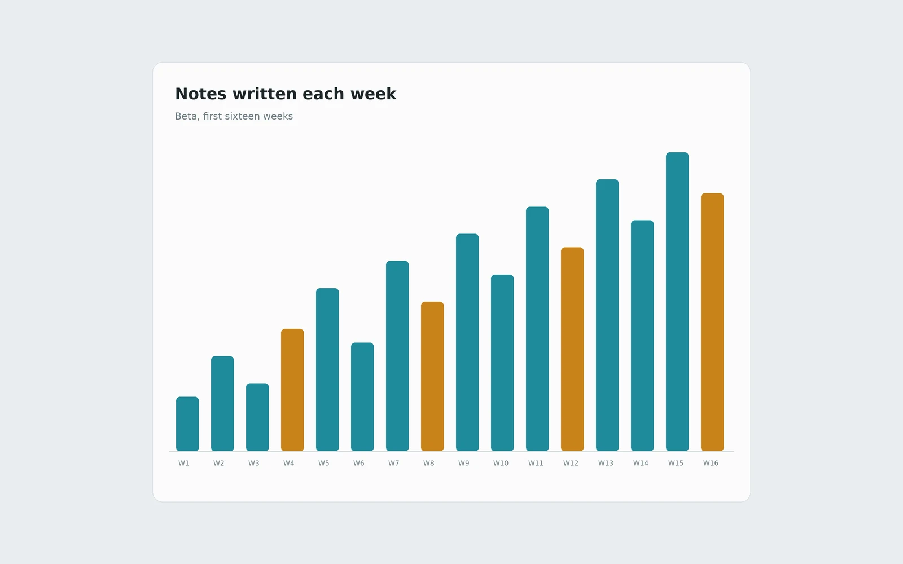

Local first notes
Notes that stay on your computer.
Northwind Notes keeps every note as a plain file in a folder you choose. Link notes together, search them in a blink and export the lot whenever you like.
Northwind NotesMeasured, not claimed
How quick is a note, really?
Timed on an eight year old laptop, from key press to saved file.
Measured with the timing script that ships with the app, on a laptop with a spinning disk. Your numbers will differ.
- 26
- notes in the test library
- 76
- linked notes in the largest graph


Weekly notes written during the beta, from 40 people who agreed to share a count.
Northwind NotesFour questions / Free
Questions about Northwind Notes.
In a folder you choose, one plain text file for each note. There is no database and no account.
Yes. Any editor that opens text files can open your notes, and Northwind Notes picks up the changes at once.
It never needs a network. The sample site you are reading is a static export and needs none either.
Copy the folder. Export also writes a single archive with every note and its links.
More questions?
The product page walks through the three steps.


Start a notebook in one minute.
Install it, pick a folder and write. Northwind Notes keeps your notes as plain files, so any other tool can open them too.
Free to try, no account needed.